सुविकल्प: Mine Repurposing Tool
Select factors and sub-factors to discover suitable repurposing options for your mining site
![Coal Controller Organisation emblem]()
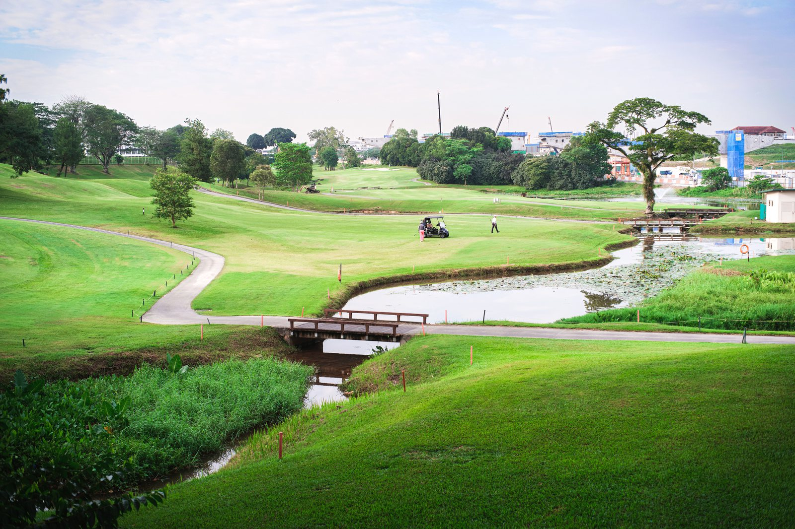
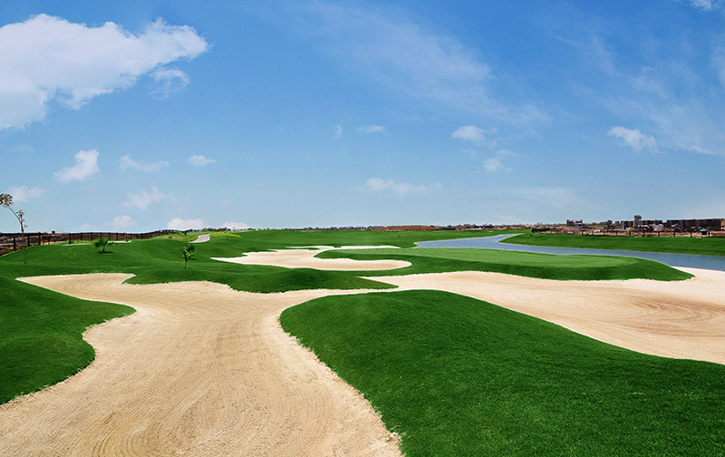
Establishes the project concept, course format options, strategic rationale, and site suitability criteria for converting closed mine land into a golf course, driving range, eco-golf park, or hybrid recreation destination.
A Golf Course / Golf Training Facility / Eco-Recreation Golf Park on closed mine land converts disturbed post-mining landscapes into managed green recreational assets. Depending on land availability and objectives, a mine-closure golf project may be developed as:
Golf is suitable for mine closure only where reclaimed land is geotechnically stable, environmentally safe, water-secure, socially acceptable, and legally permissible under the approved mine-closure framework. The Ministry of Coal's 2025 mine-closure guidelines create a policy basis for evaluating post-mining recreational and sports land uses.
The following matrix provides a structured checklist for assessing the suitability of the proposed site for the selected repurposing option. It identifies the key physical, technical, environmental, infrastructure, legal, and owner-side readiness parameters that should be reviewed before the project is advanced to the next stage of development. The purpose of this matrix is to help the project owner understand existing site conditions, technical requirements, potential constraints, and preparatory actions required before feasibility studies, approvals, or tendering are initiated.
| Category | What to Assess / Prepare | Why It Matters | Owner-Side Readiness |
|---|---|---|---|
| Mine Closure Status | Whether mine is active, discontinued, abandoned, or under closure plan | Determines legal permissibility, safety obligations, and redevelopment pathway | Mine closure status note and approval position |
| Available Land Area | Reclaimed dump, backfilled pit, township land, water bodies, clubhouse area, driving range, parking, nursery, buffer zones | Golf courses are land-intensive; usable, safe, connected land required | Site map and preliminary land availability note |
| Land Requirement | ~4–10 ac (driving range), 15–30 ac (par-3/6-9 hole), 30–75 ac (9-hole), 75–100 ac (executive 18-hole), 120–200 ac (full 18-hole) | Course format must match land availability; unsafe, steep, or restricted land reduces usable area | Preliminary area earmarking plan |
| Topography & Access | Slopes, dump benches, highwall zones, drainage, haul roads, public access, cart movement routes | Affects course routing, safety, earthwork cost, drainage, and playability | Topographic and drainage screening |
| Ground Condition | Subsidence risk, backfilled ground settlement, dump stability, bearing capacity, contamination, acid mine drainage | Critical for fairways, greens, buildings, irrigation reservoirs, and public safety | Geotechnical and subsidence screening |
| Water Bodies | Mine void lakes, settling ponds, reservoirs, drainage ponds, stormwater channels | Can support irrigation, landscape value, hazard design, and biodiversity if water quality and safety are acceptable | Water-body inventory and quality note |
| Irrigation & Water | Water source, pump station, sprinkler system, drip/targeted irrigation, soil-moisture sensors, weather station | Water efficiency and turf survival depend on irrigation design; USGA guidance recommends efficient water-use practices | Preliminary irrigation concept and water balance |
| Mine Safety | Subsidence, old workings, unstable dumps, highwalls, void edges, mine water, abandoned structures, contaminated zones | Public recreation cannot proceed unless mine hazards are eliminated or safely isolated | Mine safety screening |
| Soil & Agronomy | Topsoil depth, pH, salinity, compaction, organic matter, contamination, amendment needs | Greens, tees, and fairways require suitable growing medium and drainage | Soil testing and agronomy note |
| Market Demand | Nearby city, industrial users, public-sector townships, tourism circuits, hotels, schools, golf associations | Determines whether a course can be commercially sustained | Market demand note |
The following matrix presents an indicative relationship between available site area, project scale, technical configuration, and likely development potential. It is intended to support preliminary planning by helping the project owner identify the appropriate scale and configuration for the proposed repurposing option. The values and recommendations are indicative and should be refined through detailed feasibility studies, site surveys, engineering assessments, and relevant technical and commercial evaluations.
| Project Scale | Indicative Area | Typical Capacity | Common Configuration | Typical Application |
|---|---|---|---|---|
| Driving Range / Golf Academy | 4–10 acres | 20–100 users/day | Driving range, putting green, chipping area, coaching bays, junior zone | Local youth training, public recreation, mine-township amenity |
| Small Par-3 / Executive Facility | 15–30 acres | 50–150 users/day | 6–9 hole par-3 course with driving range | Community golf, training, tourism add-on |
| Standard 9-Hole Golf Course | 30–75 acres | 80–250 users/day | 9 holes, clubhouse, driving range, maintenance yard | Mine-region recreation, township and industrial users |
| Premium 9-Hole / Resort-Linked | 50–100 acres | 100–300 users/day | Championship-style 9-hole, academy, clubhouse | Tourism, corporate events, sports tourism |
| Executive 18-Hole Golf Course | 75–100 acres | 150–400 users/day | 18-hole executive course, academy, clubhouse | Public recreation, memberships, tournaments |
| Full-Size 18-Hole Golf Course | 120–200 acres | 200–500 users/day | 18-hole par-72 course, clubhouse, maintenance, academy | Regional sports, tourism, hospitality |
| Eco-Golf & Biodiversity Park | 50–200+ acres | Variable | Limited managed turf, native roughs, trails, lakes, education centre | Mine landscape rehabilitation, recreation, biodiversity |
| Hybrid Golf + Resort + Heritage | 100+ acres | Variable | Golf course, clubhouse, resort, museum, trails, event space | High-value mine-tourism and recreation destination |
Covers the full range of implementation models for golf course development on mine land — from owner-led EPC to private developer concessions and hybrid tourism models — with comparative assessment to guide model selection based on ownership preference, funding, and livelihood objectives.
The following table outlines the possible implementation models that may be considered for developing the proposed repurposing project. These models differ in terms of ownership structure, funding responsibility, private sector participation, operational control, and long-term risk allocation. The purpose of this table is to help the project owner compare broad development routes and select an implementation approach that aligns with its financial capacity, institutional preference, risk appetite, and long-term asset management objectives.
The following matrix presents an indicative relationship between available site area, project scale, technical configuration, and likely development potential. It is intended to support preliminary planning by helping the project owner identify the appropriate scale and configuration for the proposed repurposing option. The values and recommendations are indicative and should be refined through detailed feasibility studies, site surveys, engineering assessments, and relevant technical and commercial evaluations.
| Model | Core Feature | Broad Suitability |
|---|---|---|
| EPC | Owner funds and owns; contractor designs and builds the course, clubhouse, irrigation, landscape, and facilities | Where mine owner wants full control and has funding capacity |
| EPC + O&M / Facility Management | Owner funds and owns; specialist operator manages turf, irrigation, clubhouse, training, events, and facility management | Most suitable where owner wants asset control but needs specialist golf operation and landscape maintenance |
| BOOT | Private developer finances, builds, owns, and operates during concession period, then transfers the asset | Where eventual transfer to mine owner or authority is preferred |
| BOO | Private developer finances, builds, owns, and operates the golf course / recreation facility long-term | Where long-term private ownership is acceptable and market risk is to be shifted |
| DBFOT | Developer designs, builds, finances, operates, and transfers under structured concession | PPP-style mine repurposing with limited upfront owner funding |
| Lease-Develop-Operate | Mine owner leases land / buildings / water bodies to developer who develops and operates the facility | Where mine owner wants land monetisation and livelihood obligations without full CAPEX burden |
| Golf Facility Management | Owner develops basic facility; professional operator manages maintenance, bookings, training, events, clubhouse | Where owner wants to retain asset but outsource specialist golf operations |
| Hybrid Golf + Eco-Recreation + Tourism | Combines golf, public park, trails, lakefront, mine heritage, biodiversity zones, training academy, and hospitality | Where recreation and tourism-led mine redevelopment is the central objective |
The following comparative assessment evaluates the major implementation models across key decision parameters such as investment requirement, ownership control, financing responsibility, contractual complexity, risk transfer, and long-term economic benefit. This matrix is intended to support early-stage decision-making by highlighting the relative strengths and limitations of each model. The final choice of model should be guided by the specific circumstances of the project, including its scale, commercial viability, applicable policy framework, and the owner's institutional preference.
| Evaluation Parameter | EPC | EPC+O&M | BOOT | DBFOT | Lease-Develop-Operate | Hybrid |
|---|---|---|---|---|---|---|
| Upfront investment by Mine Owner | High | High | Low | Low | Low | Moderate to Low |
| Ownership retained by Mine Owner | Yes | Yes | No (during concession) | No (during concession) | Land only | Depends on structure |
| Golf operation complexity for owner | High | Lower (O&M scope) | Developer-heavy | Developer-heavy | Operator-heavy | Case-specific |
| Suitability for local livelihood | Moderate | Very High | High | High | High | Very High |
| Revenue potential for owner | High (full) | High (net of O&M) | Deferred/partial | Deferred/partial | Lease/revenue share | Moderate to High |
| Water & landscape responsibility | Owner-heavy | O&M operator (owner oversight) | Developer/concessionaire | Developer/concessionaire | Operator under lease | Shared/SPV |
| Market risk transfer | Low | Moderate | High | High | High | Moderate to High |
| Overall suitability for Golf Course | High (if funded) | Very High | Moderate | Moderate | High | Very High |
The following table explains how major project responsibilities are typically allocated under different implementation models. It covers key functional areas such as site availability, financing, design and construction, regulatory approvals, operation and maintenance, revenue collection, asset ownership, and end-of-term transfer. This helps clarify the respective roles of the project owner, private developer, EPC contractor, operator, or concessionaire, and supports the preparation of tender documents and contractual structures.
| Responsibility Area | EPC | EPC+O&M | BOOT | DBFOT | Lease-Develop-Operate | Hybrid |
|---|---|---|---|---|---|---|
| Site / Land Availability | Owner | Owner | Owner / authority | Owner / authority | Owner | Variable |
| Financing (CAPEX) | Owner | Owner | Developer | Developer | Lessee / developer | Shared |
| Course Design & Earthworks | EPC contractor | EPC contractor | Developer / EPC | Developer / EPC | Lessee / contractor | Variable |
| Clubhouse & Facilities Construction | EPC contractor | EPC contractor | Developer | Developer | Lessee | Variable |
| Landscaping, Irrigation & Turf Management | Owner or O&M agency | O&M operator | Developer | Developer | Lessee / operator | Shared |
| Golf Course & Facility O&M | Owner or separate agency | O&M operator | Developer | Developer / operator | Lessee / operator | Shared / specialist |
| Revenue Collection (green fees, memberships, F&B) | Owner | Owner | Developer during concession | Developer / concessionaire | Lessee | Shared per agreement |
| Asset Ownership During Term | Owner | Owner | Developer during concession | Developer during concession | Owner (land); lessee (structures) | Variable |
| Transfer at End of Term | No | No | Yes — to owner | Yes — to owner | Variable per lease terms | Variable |
In owner-led models such as EPC and EPC + O&M, the project owner retains primary responsibility for financing and ownership, while technical functions are outsourced. In developer-led models such as BOOT, BOO, DBFOT, and Concession, financing, construction, operation, and revenue realisation are largely undertaken by the private developer or concessionaire. Hybrid structures allocate responsibilities according to the negotiated project arrangement.
Covers funding logic, revenue streams (green fees, memberships, academy, events, tourism), livelihood potential across models, and combined comparison of profitability and social value for golf course and eco-recreation mine repurposing projects.
The following table presents the broad funding logic for each implementation model. It explains who is expected to finance the project, the level of owner-side funding requirement, and the commercial rationale behind each structure. This section is intended to help the project owner assess whether the project is more suitable for owner-funded development, private investment, public-private partnership, lease or concession structure, or a hybrid funding arrangement.
| Model | Primary Funding Source | Owner Funding Requirement | Commercial Logic |
|---|---|---|---|
| EPC | Owner's equity, internal accruals, mine closure fund, CSR where permissible | High | Owner directly finances and retains complete ownership and long-term benefit |
| EPC + O&M / Facility Management | Owner's equity, debt financing, CSR/community development allocation | High | Owner finances and owns the golf course while outsourcing specialist turf care, irrigation, clubhouse, and facility management |
| BOOT | Private developer equity and external project financing | Low | Developer finances, develops, and operates; recovers investment during concession; transfers asset later |
| DBFOT | Developer equity and debt backed by concession rights, membership plan, hospitality, event, and tourism revenue | Low | Developer assumes design, financing, construction, operation, and transfer obligations |
| Lease-Develop-Operate | Developer equity and debt; mine owner contributes land/building/water-body lease | Low | Developer pays lease, royalty, or revenue share while monetising golf and recreation services |
| Hybrid Golf + Eco-Recreation + Tourism | Combination of owner funding, developer financing, tourism investment, CSR, hospitality investment | Moderate to Low | Multiple revenue streams improve viability and local livelihood potential |
The following table explains how revenue may be generated under different implementation models and identifies who is likely to receive the principal project income. It also describes the nature and extent of the financial benefit available to the project owner, whether through direct project revenue, cost savings, lease income, concession fees, revenue sharing, service charges, or eventual asset transfer. This comparison is intended to support the selection of a commercially appropriate model for the proposed repurposing project.
| Model | How Revenue is Generated | Who Receives Revenue | Owner's Financial Benefit |
|---|---|---|---|
| EPC | Membership fees, green fees, driving range, academy, events, tournaments, clubhouse, tourism, land value uplift | Mine Owner | Full economic and social benefit from golf-course operation and asset ownership |
| EPC + O&M | Same as EPC, net of O&M, turf maintenance, operator fee, and facility management payments | Mine Owner (net) | High benefit with reduced operating burden |
| BOOT | Memberships, green fees, tournaments, events, academy, clubhouse, hospitality, concession revenue | Developer during concession | Deferred or partial through concession fee, lease income, revenue share, local employment, and eventual transfer |
| DBFOT | Golf revenue, hospitality, events, tourism, academy fees, public access contracts | Developer/concessionaire during concession | Benefit through concession payments, avoided CAPEX, asset transfer, and local redevelopment |
| Lease-Develop-Operate | Golf and recreation revenue earned by developer; lease rent or revenue share to mine owner | Developer (with negotiated share to owner) | Land/asset monetisation without large investment |
| Hybrid | Golf, academy, tourism, events, resort, food and beverage, public recreation, mine heritage, eco-education | SPV/owner/developer depending on structure | Can be high if owner retains stake or receives revenue share |
The following table assesses the likely local livelihood and employment potential of each implementation model. It considers the extent to which each model can support construction-phase jobs, long-term operational employment, local procurement opportunities, skill development, community participation, and associated support services. This section is particularly relevant where the repurposing project is expected to contribute to post-mining or post-operational economic transition and sustained local community benefit.
Golf courses create long-term manpower needs in turf maintenance, landscaping, nursery, irrigation, lake management, pathway maintenance, golf-cart operation, caddie services, coaching, clubhouse, food and beverage, housekeeping, security, event management, equipment repair, and visitor services.
| Model | Local Job Potential | Why | Overall Suggestibility |
|---|---|---|---|
| EPC | Moderate | Creates local jobs mainly during construction; limited direct long-term employment commitment | Moderate |
| EPC + O&M / Facility Management | Very High | Creates construction jobs plus long-term turf maintenance, irrigation, clubhouse, hospitality, caddie, security, and events. Owner can directly enforce local hiring and training clauses | Very High / Most Suitable |
| BOOT | High | Creates construction and operational jobs during concession; local benefit depends on concession obligations | High (less controllable than EPC+O&M) |
| DBFOT | High | Can create long-term operational jobs if concession includes local employment, training, public access, and community benefit obligations | High |
| Lease-Develop-Operate | High | Mine owner can include local hiring, caddie training, landscape maintenance, and public access obligations in lease terms | High |
| Hybrid Golf + Eco-Recreation + Tourism | Very High | Combines golf, landscaping, tourism, clubhouse, events, eco-trails, lake management, hospitality, security, and local enterprise support | Very High |
The following combined comparison brings together three important dimensions of project structuring: revenue potential, owner-side financial benefit, and local livelihood generation. It provides a consolidated view of how each implementation model performs across commercial, institutional, and community-development perspectives. This matrix is intended to support balanced decision-making where the objective extends beyond financial return to include sustainable site reuse and long-term local economic benefit.
| Model | Owner Profitability | Local Job Creation | Overall Comment |
|---|---|---|---|
| EPC | High — owner retains full revenue after capital repayment | Moderate to High | Suitable where the owner has funding capacity and seeks full control over the asset |
| EPC + O&M | High — strong ongoing revenue net of O&M costs | High to Very High | Best for owners who can fund development and want sustained control with professional management |
| BOOT | Moderate — income through lease, concession fee, or transfer value | High | Suitable where private financing is needed; owner benefits indirectly and gains the asset at end of concession |
| DBFOT | Moderate to High — through lease, concession fee, and transfer | High to Very High | Strong PPP structure for larger projects requiring private investment and structured public participation |
| Lease-Develop-Operate | Moderate — through lease income and negotiated revenue sharing | High to Very High | Suitable where the owner wants development-stage and operational-stage private involvement |
| Hybrid | Variable to High — depends on structure and revenue-sharing terms | Very High | Most suitable where public value, community benefit, and commercial viability are all required |
Defines what the mine owner must complete before issuing the first RFP — covering land, safety, water, soil, market, and legal readiness — and what detailed work can be assigned to the selected contractor, developer, or operator post-award.
The following section identifies the key owner-side preparatory actions that should ideally be completed before issuing the first Request for Proposal. These actions are aimed at reducing uncertainty for prospective bidders, improving project bankability, clarifying site availability, identifying approval pathways and risks, and defining the technical and commercial scope of the project. Completing these preparatory steps before tendering can improve bid quality, attract credible responses, and reduce the risk of delays during project implementation.
Before issuing an RFP for a Golf Course / Eco-Recreation Golf Park / Golf Tourism mine repurposing project, the mine owner should prepare the following in priority order:
The following section lists the principal activities that may be undertaken by the selected contractor, developer, concessionaire, operator, or implementation agency after award of the project. These activities generally include detailed site investigations, engineering design, statutory submissions and approvals, equipment procurement, construction, commissioning, operational planning, staff training, and performance monitoring. The distinction between pre-RFP owner preparedness and post-award implementation responsibilities helps ensure an appropriate and efficient allocation of effort across the project development cycle.
After award, the selected concessionaire / contractor / O&M agency / golf operator can take up the following activities in chronological order:
Covers the indicative implementation pathway, recommended model selection, key references from USGA, Ministry of Coal, and golf course architecture literature, and a glossary of abbreviations for golf course mine repurposing projects.
The following implementation pathway presents a practical high-level sequence for advancing the proposed repurposing concept from initial approval through to project execution and long-term operation. It outlines the broad stages of concept approval, preliminary studies, model selection, bid preparation, procurement, detailed design, statutory approvals, construction, commissioning, and ongoing operation. This pathway is indicative and should be adapted to reflect the specific complexity, regulatory requirements, financing structure, and site conditions applicable to the project.
The following way forward summarizes the preferred development approach for the proposed repurposing option, based on the assessment presented in PRISM (Post Mining Repurposing Implementation and Strategy Models). It identifies the most suitable implementation models in order of preference, highlights key technical and due-diligence considerations, and outlines the recommended next steps and broad development logic. This section is intended to guide internal decision-making and support the project owner in progressing from concept-stage evaluation toward feasibility assessment, project structuring, regulatory approvals, and implementation planning.
Preferred Models (in order):
Recommended Development Position: Given the land, water, and O&M intensity of golf courses, the recommended first step is a pre-feasibility, topographic, geotechnical, water-balance, agronomic, market-demand, and environmental-suitability study. For most mine owners, EPC + O&M / Facility Management is the most balanced model combining ownership, landscape control, public image, profitability, and local livelihood. Where a mine-heritage tourism project, eco-park, or resort is also under consideration, a combined Mine Closure + Golf Course + Eco-Recreation + Tourism pathway should be examined.
| Abbreviation | Full Form |
|---|---|
| EPC | Engineering, Procurement and Construction |
| O&M | Operation and Maintenance |
| BOOT | Build, Own, Operate, Transfer |
| BOO | Build, Own, Operate |
| DBFOT | Design, Build, Finance, Operate, Transfer |
| PPP | Public-Private Partnership |
| CSR | Corporate Social Responsibility |
| RFP | Request for Proposal |
| DPR | Detailed Project Report |
| CAPEX | Capital Expenditure |
| CCO | Coal Controller Organisation |
| PMC | Project Management Consultant |
| SPV | Special Purpose Vehicle |
| USGA | United States Golf Association |
| IGU | Indian Golf Union |
| SAI | Sports Authority of India |
| PGAI | Professional Golf Association of India |
| AMC | Annual Maintenance Contract |
| DMF | District Mineral Foundation |
| SPCB | State Pollution Control Board |
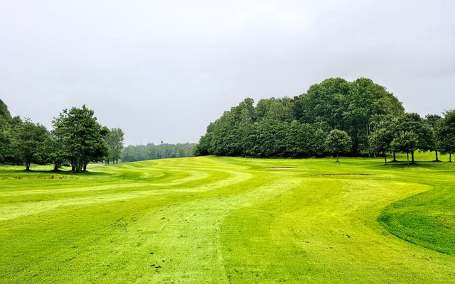
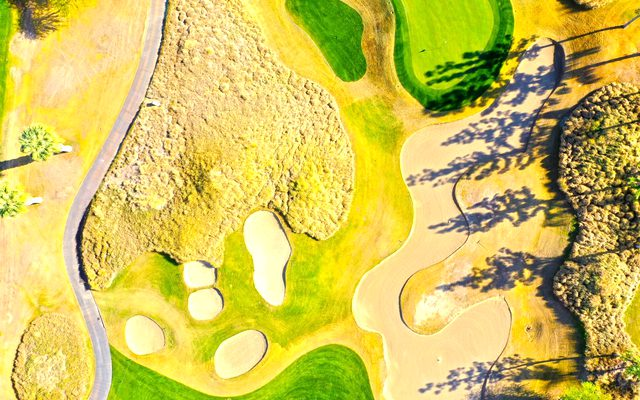
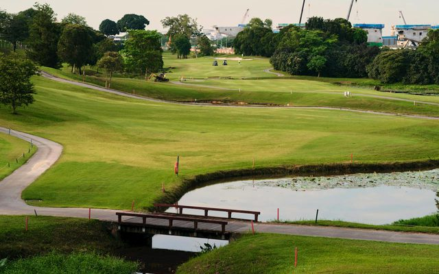
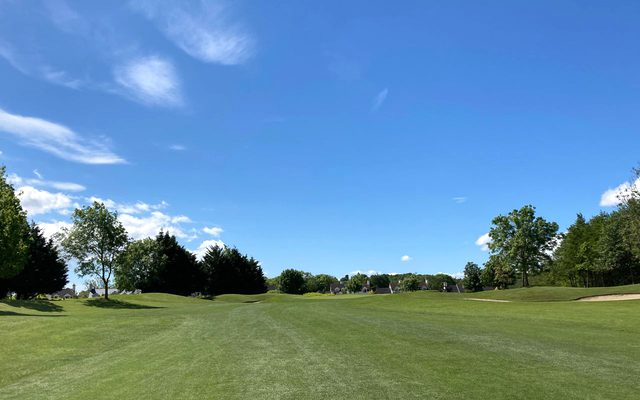
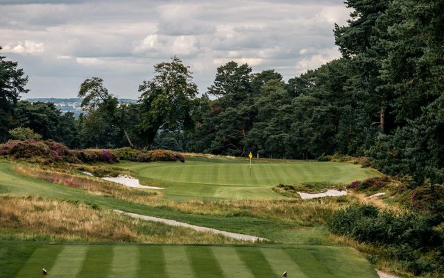
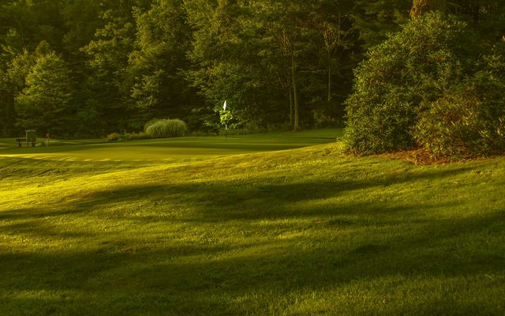
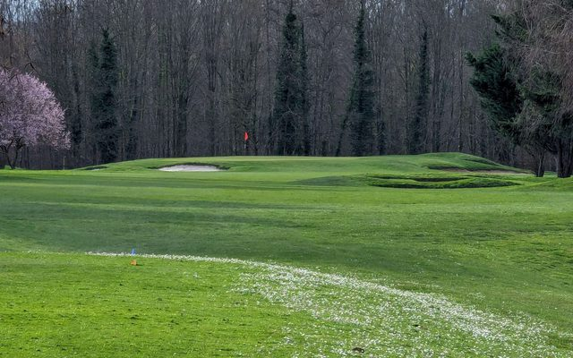
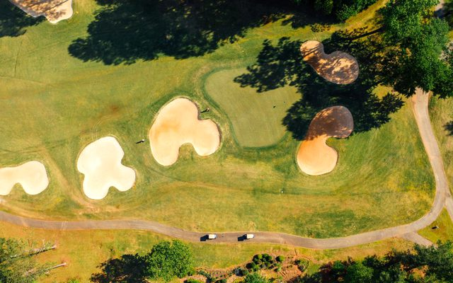
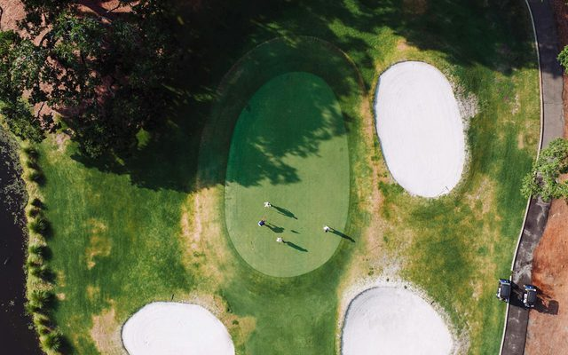
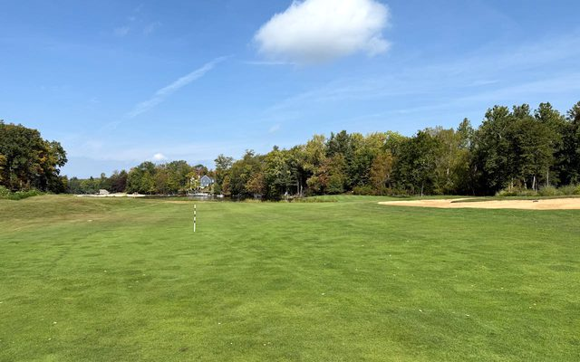
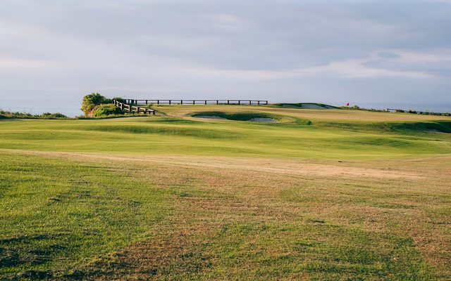
Links open external websites. Coal Controller Organisation does not endorse third-party content.

.svg)


Disclaimer: Inclusion of an agency on this list does not constitute endorsement, empanelment, or recommendation by the Coal Controller Organisation or the Ministry of Coal, Government of India. Mine owners and project proponents are advised to conduct their own due diligence process before engaging any agency.
This is an indicative list of domain areas and institutional profiles. Mine owners should engage qualified professionals with relevant certifications, verified track records, and appropriate institutional affiliations. This list does not constitute an endorsement.
Disclaimer: Inclusion of an expert does not constitute endorsement, empanelment, or recommendation by the Coal Controller Organisation or the Ministry of Coal, Government of India. Users are advised to independently verify credentials and suitability before engaging any individual.